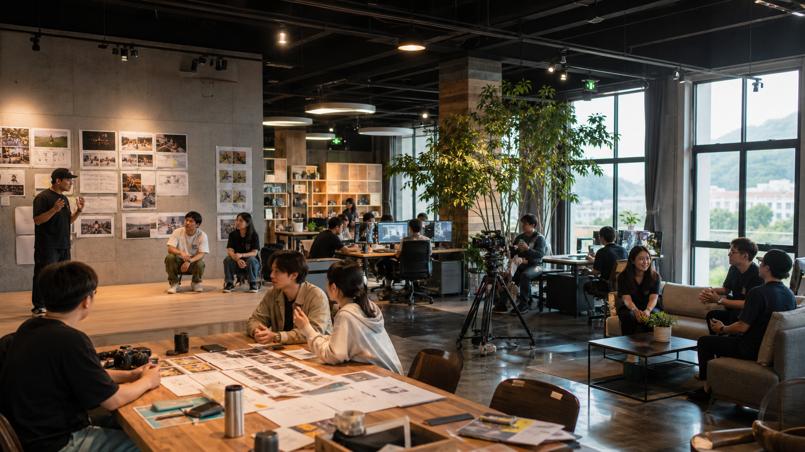
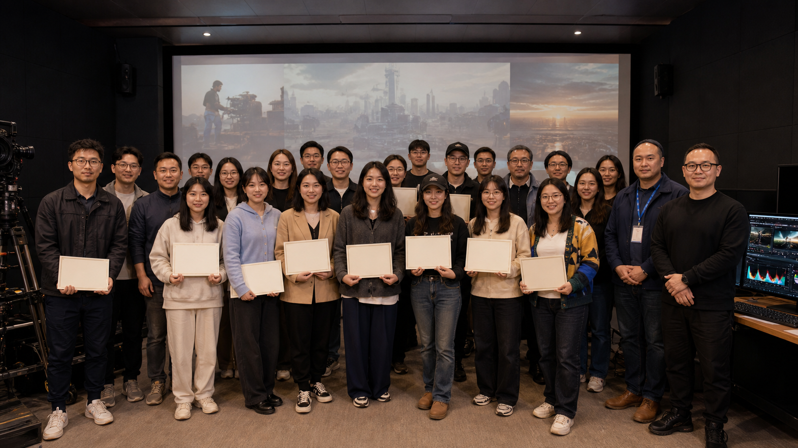

剧本持续供给
提供经过评估的小说IP与漫剧剧本，减少选题和开发成本。
连接政府、产业伙伴、高校与创作者，
共建AI影视内容生产与发行生态。
你只管把漫剧做好，
剧本、算力和发行交给我们。
容量万相提供剧本、漫剧制作工具、算力优惠与全域发行支持，通过保底加分成、收益分成或版权买断等方式，与创作者共享内容价值。
提供经过评估的小说IP与漫剧剧本，减少选题和开发成本。
开放漫剧制作工具，为合作团队提供专属算力折扣。
OPC专注制作，渠道发行、运营和商业化由平台承接。
覆盖投流、平台、端上与海外市场，延长作品商业周期。
支持保底加分成、收益分成或版权买断，按项目灵活合作。
区域团队形成规模后，协助对接园区与创业扶持政策。
连接不同城市的专业创作力量
古风漫剧 · 角色一致性
已完成 12 个项目都市剧情 · 动态分镜
已完成 9 个项目科幻题材 · 视觉特效
已完成 7 个项目当区域内形成一定规模的OPC团队且符合当地政策条件，平台可协助对接政府、产业园区与创业扶持资源。具体资格及结果以当地政府审核为准。
从真实地域出发，
让城市文化成为可传播的内容资产。
让创作者在真实空间中连接工具、项目与伙伴。
面向AI影视OPC团队开放的线下创作社区，提供办公场地、制作工具、算力、版权、发行和产业项目资源。

联动地方产业、城市文化与创作人才，承接AI内容共创、产业培训和区域项目孵化。

联合高校建设AI影视实践专班，面向师生开放创作工具、真实项目、算力支持与创业孵化资源。
生态网络仍在生长，下一批城市内容共创正在发生。
连接内容、人才、技术与发行，
让合作从单个项目走向长期生态。
布局“AI+OPC+大视听”生态创新中心，提供场地、AI内容创制平台、算力、IP版权库、发行、出海与产业订单。
联动城市文旅、非遗IP、科普与公益项目，开放内容分包订单，支持创作者承接地域精品内容创制。
联合产业伙伴发起主题内容赛事，提供创作命题、流量发行扶持与作品奖励。
联合高校开设AI影视实践专班，开放轻量化创作订单、算力支持与创业孵化资源。
面向政府、产业园区、高校、企业与OPC创作团队开放合作。
提交申请后，我们将在审核后与您联系。

当前为高光片花交互示意，正式版本将接入项目视频素材。